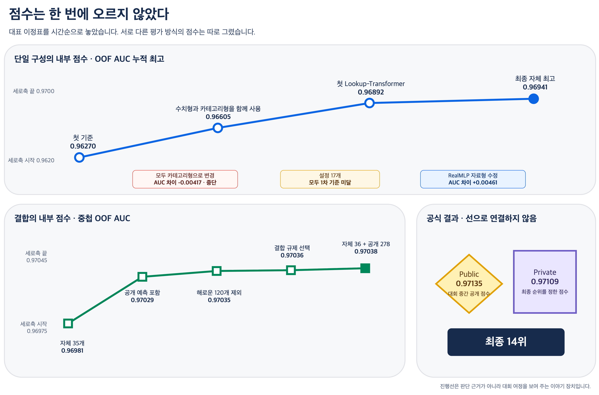
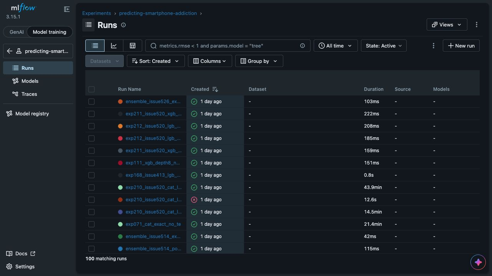
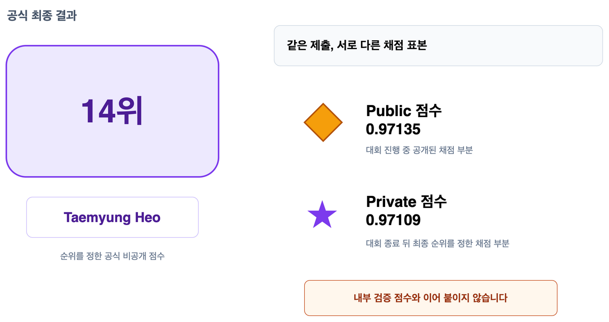

Kaggle S6E8 Predicting Smartphone Addiction 대회 후기
12개 생활 습관 피처로 스마트폰 중독 위험의 순서를 예측했습니다. 첫 기준 점수에서 최종 14위까지, 무엇을 시도했고 어떤 실패를 남겼으며 판단 방식이 어떻게 바뀌었는지를 시간순으로 돌아봅니다.

출발점은 OOF AUC 0.96270이었습니다
첫 모델은 12개 원본 피처를 그대로 사용한 LightGBM(LGB) 베이스라인 모델이었습니다. OOF AUC 0.96270을 출발점으로 정한 뒤, 같은 검증 방식에서 현재 가장 좋은 결과와 비교하며 피처와 모델을 하나씩 바꿔 갔습니다.
베이스라인에서 최종 앙상블까지 탐색 범위를 넓혔습니다
모델만 바꾼 것이 아니라, 같은 피처를 표현하는 방법부터 여러 예측을 앙상블하는 방법까지 차례로 실험했습니다.
- LightGBM 베이스라인원본 피처 12개
OOF AUC 0.96270 - 피처 엔지니어링수치형과 카테고리형
잔차와 결측값 보완 - 트리 모델 확장LightGBM에서
XGBoost·CatBoost로 확장 - NN 모델 확장Lookup-Transformer, TabM, RealMLP, TabCNN, TabPFN-3
- 앙상블서로 다르게 틀리는 예측을 골라 함께 사용
이 순서는 앞선 모델을 버리고 다음 모델로 교체했다는 뜻이 아닙니다. 이전 예측을 남겨 둔 채 새 피처와 모델을 비교했고, 단독 점수가 높거나 기존 예측의 약점을 보완한 결과를 최종 앙상블 후보로 모았습니다.
처음 크게 오른 순간은 복잡한 모델을 새로 추가했을 때가 아니었습니다. 같은 피처를 수치형으로 유지하면서 카테고리 형식으로도 함께 보여 주자, 내부 단일 구성 점수가 0.96605로 올랐습니다.
반대로 숫자를 모두 카테고리형 피처로만 바꾸자 AUC 차이가 -0.00417이었습니다. 점수가 오른 실험만 보면 계속 성공한 것처럼 보입니다. 실제로는 점수가 떨어지거나 기준에 못 미친 여러 실험 결과를 보고, 같은 방향의 시도를 멈추거나 다음 실험을 정했습니다.
윗선은 그 시점까지 확인한 단일 구성의 최고점을 잇습니다. 선 아래 상자는 최고점을 바꾸지는 못했지만 이후 판단에 영향을 준 사건입니다. 이 선은 대회 여정을 설명하기 위한 것이며, 개별 실험의 채택 근거를 대신하지 않습니다.
새 아이디어를 더한 것보다 구현 오류를 고친 뒤 점수가 더 크게 올랐습니다
RealMLP를 처음 옮겼을 때 기대보다 낮은 점수가 나왔습니다. 모델의 한계라고 결론 내리기 전에 데이터가 실제로 어떻게 전달되는지 확인했고, 카테고리형 피처의 값을 내부 번호로 바꾸기 전에 자료형이 달라지면서 학습 때 없던 값으로 잘못 처리되는 데이터 칸이 대량으로 생기는 문제를 찾았습니다.
수정 전
800,896건 검증 데이터에서 학습 때 없던 값으로 처리된 피처 칸 0.96371 3시드 평균 OOF AUC자료형 변환 순서 수정 후
23건 검증 데이터에서 학습 때 없던 값으로 처리된 피처 칸 0.96832 3시드 평균 OOF AUC AUC 차이 +0.00461이 숫자는 사람 수나 서로 다른 값의 개수가 아닙니다. 검증 데이터 한 묶음에서 12개 카테고리형 피처를 변환하면서, 학습 때 없던 값으로 처리된 데이터 칸을 모두 센 결과입니다.
이때부터 새 구성을 더 많이 찾는 일과 이미 만든 구성이 의도대로 작동하는지 확인하는 일을 같은 무게로 보기 시작했습니다. 대회 후반의 작은 개선들을 믿을 수 있었던 바탕도 이 구분이었습니다.
실험이 늘자 기록은 판단을 돕는 장치가 됐습니다
실행 장소와 모델이 늘어나자 무엇을 바꿨는지 기억만으로 따라갈 수 없었습니다. 그래서 실행 조건과 결과를 MLflow 한곳에 모았습니다.
다만 MLflow 화면의 순위가 결정을 내리지는 않았습니다. 같은 자료와 같은 분할에서 비교할 수 있는 결과만 판단에 사용했고, 채택과 중단의 이유는 별도 기록으로 남겼습니다.

마지막에는 한 점보다 서로 다른 오답을 모았습니다
단일 구성의 최고점이 0.96941에 이른 뒤에는 혼자 높은 점수를 내는지만 보지 않았습니다. 기존 예측과 다르게 틀리는지, 함께 넣었을 때 봉인한 자료에서도 실제로 도움이 되는지를 따로 확인했습니다.
자체 예측 35개를 합친 중첩 OOF AUC 0.96981에서 출발해 검증한 공개 예측을 더했고, 도움이 되지 않은 120개는 다시 뺐습니다. 마지막에는 자체 모델에서 만든 예측 36개와 공개된 예측 278개를 합쳐 내부 결합 점수 0.97038을 만들었습니다.
여기서 314개는 서로 완전히 다른 모델 314개를 뜻하지 않습니다. 같은 모델 계열에서 설정을 바꿔 얻은 결과와 공개된 예측도 각각 하나의 예측 결과로 셌습니다.

점수는 결과였고, 남은 것은 판단 방식이었습니다
돌아보면 점수는 큰 도약 몇 번과 수많은 중단 사이에서 조금씩 올랐습니다. 작게 바꾸고, 같은 기준에서 비교하고, 실패도 다음 선택의 근거로 남기는 방식이 있었기 때문에 마지막 작은 차이까지 믿고 조립할 수 있었습니다.